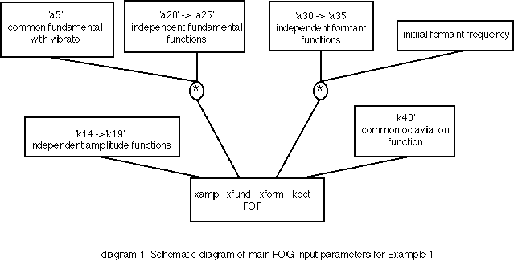
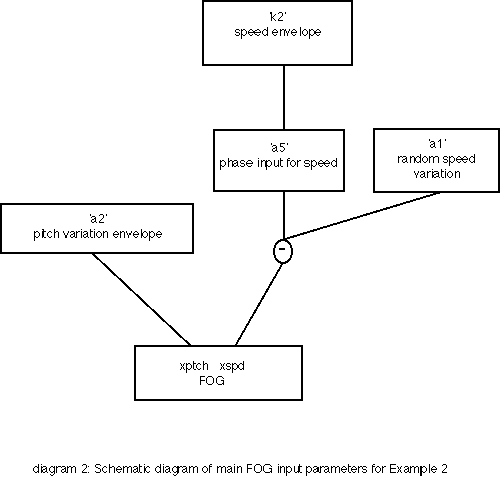
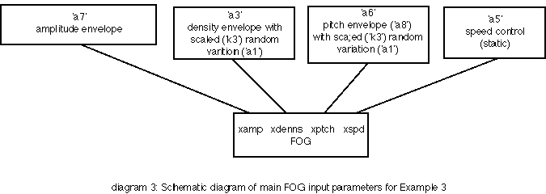
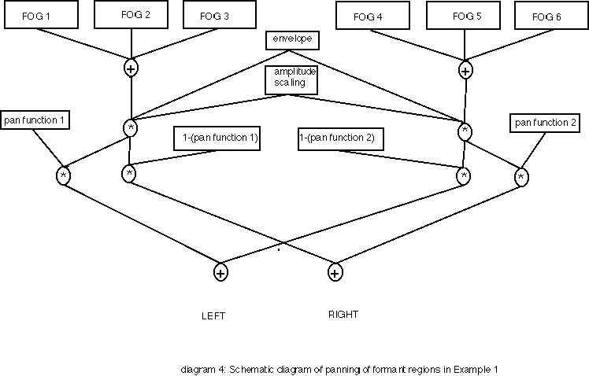
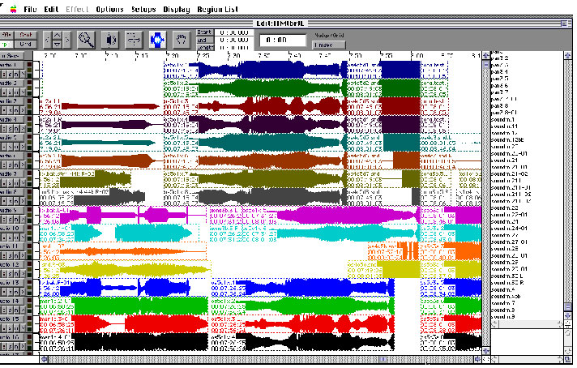

This chapter describes the particular approach I have taken in composing with Csound over a number of years. Distinctive features of this approach are:
• compositional ideas that derive from research
• the programming of new unit-generators
• dissolution of the traditional note/instrument distinction
• spatialisation as an aspect of synthesis
• a hybrid approach to composing with Csound
The ideas and techniques that are described here were developed in relation to the composition TIM(br)E (1996). This work builds on and extends ideas in an earlier work Mälarsång (1987). Descriptions of the various aesthetic, strategic and practical issues that arise from this way of composing with Csound are complemented by a series of illustrative examples of Csound orchestras and scores to be found on the accompanying CD-ROM.
To some people studying theoretical formulae and writing computer code might seem to have little to do with music. Indeed, it is all too easy for the computer musician to become side-tracked by technology. Nonetheless, as long as music is firmly established as the goal, and technology as the means of achieving that goal, there is much to be gained from combining theoretical research and programming with composition.
In all generations, many of the most creative composers have been inventive within the medium they have used. Rarely have they accepted the established conventions regarding the use of instruments or formal structures. They have devised new uses for instruments, new sounds from ensembles and extended structural devices to, and sometimes beyond, breaking point. Composition has always been about much more than just note patterns, even if Western musical notation gives a misleading impression. Today, working in the digital medium, composers have even more opportunity to shape all aspects of the sounds they work with. Composers can design new instruments, define how they should be played, and produce music utilising them. More than this, the composer can redefine musical structure, even to the point where traditional distinctions between score and orchestra are dissolved. It is only natural that inquisitive and creative minds may wish to explore such possibilities. At times, to fully investigate these opportunities, it is necessary to become involved in research and programming. A composer may start with a theoretical idea, perhaps derived from mathematical, acoustic, psycho-acoustic or other research, write a program using these ideas, explore the sonic results, and eventually, after much refinement, use this code as the basis for composition. Of course, not all composers will feel they have they time, expertise or inclination to undertake all of these tasks. It is, however, a valid musical approach. The important thing is not to lose sight of the final goal: music.
Csound provides an exceptional tool for such an undertaking. No other program provides such a user-friendly environment for this type of an endeavour. Csound has sometimes been criticised as being unfriendly to use, but 'user-friendliness' can be defined too narrowly. Too often 'user-friendliness' is taken to mean no more than 'beginner-friendliness'. Many programs which are pre-packaged to help the beginner get started are 'expert-unfriendly'. The very packaging that helps the novice obstructs the expert, restricting the options available and making more advanced use difficult or even impossible. Csound is exceptionally user-friendly: once the basics of the program have been mastered almost anything is possible. What is more, if something is not possible within the standard program, there is always the option of programming an extension to Csound, for example, by adding an extra unit-generator. In this context Csound provides a situation in which the programmer/composer can concentrate on coding the new algorithm knowing that it will then operate within the comprehensive compositional environment already provided by Csound.
The starting point for the work that led eventually to TIM(br)E was a musical one. During an 8-month stay in Stockholm in 1983-4 a copy of the IRCAM program CHANT arrived. The quality of CHANT's sound synthesis, and the possibilities for transforming sounds greatly impressed me and excited my compositional imagination. Many new possibilities sprang to mind, but a combination of circumstances prevented me from realising these ideas using CHANT itself. Firstly, I returned to England before I had had the opportunity to fully explore my ideas and I did not have the facilities to use CHANT. Secondly, the structure of CHANT did not permit some of the more radical experiments I wished to try: its structure was primarily designed with vocal synthesis in mind.
The idea was to be able to make very radical transformations to the sounds synthesised by CHANT and to do this it was necessary to have direct access to all the parameters of the underlying FOF synthesis. FOF synthesis is a form of granular synthesis with the grains or excitations controlled very precisely in order that they coalesce into a unified timbre. I wished to be able to move between the situation in which the grains are synchronised to produce a timbre and situations in which they are no longer co-ordinated and the unified timbre dissolves into a texture. This formed part of a larger musical goal of being able to shape the various streams or formant regions that go to make up a timbre independently, with streams coalescing and diverging in time to form various timbres and textures. I was interested in ways of exploring ambiguity in the identity of sounds, components combining in continually changing ways. Programming a FOF unit-generator in Music 11 (an early version of Csound) with its modular structure made it possible for me to realise some of these ideas.
timbre1.orc and timbre1.sco illustrate many of the above features. A unified voice dissolves, its formant regions becoming independent granular streams, then reforms into a voice once more. A single note in the score produces a rich and complex transformation lasting 30 seconds. In the context of the work itself, several such transformations are mixed together to form a larger texture. The orchestra is quite complex and only relevant aspects of it will be summarised briefly here. k14->k19 are breakpoint functions used to adjust the relative amplitudes of the different FOF unit-generators (i.e. formant regions). At the start and end of the passage they provide the appropriate weightings for a vocal simulation. In the middle of the passage the weightings are equal, each of the streams, having broken free from the unified timbre, gaining equal prominence. a5 is the common fundamental frequency, including vibrato, for all the FOF generators. a20->a25 each multiply the basic fundamental of one of the FOF generators. Each follows an independent path, and all at some time cause the fundamental frequency to descend to the point where the continuous timbre dissolves into an audible sequence of grains. Each FOF generator's formant frequency also follows its own path as modified by a30->a35. Octaviation is also used (k40, this is common to all the FOF generators) to further enhance the transformation, the sound dropping one octave from the start to the end of the passage. Diagram 1 illustrates the structure of this instrument schematically.

In composing TIM(br)E I further extended the FOF algorithm, developing a FOG unit-generator for Csound. This involved taking the comparison of FOF synthesis with granular synthesis still further and incorporating the granularisation of soundfiles. The concept I had been exploring of a sea of grains, with sound objects emerging from and receding into this sea as streams of grains temporarily coalesce and come into synchronisation, could be extended. A wider range of grain types could be used and, consequently, the range of sound objects that could be formed was broadened. Not only could synthesised sounds grow out of the grains but recorded sounds could also come into focus from an apparently random mass of grains. Various processing could be performed on the original sound-files by adjusting the FOG parameters. All this further enhanced the scope for playing with ambiguity, with different types of timbres and textures (based both on synthesised and recorded sounds) merging seamlessly. Although these and other ideas led eventually to the composition of TIM(br)E research and programming were first necessary in order that the musical concepts might become an aural reality.
timbre2.orc and timbre2.sco demonstrate the use of the FOG unit-generator to transform a sound file. Diagram 2 shows this schematically. The original recording is taken from the archives of the World Soundscape Project at Simon Fraser University, Vancouver. It is a recording of a French priest preaching with a very lyrical voice. The pitch is varied by a line segment function (a2) through a range from 3 times the original at one extreme to .2 times the original at the other. The speed is subjected to a more complex random variation. a5 produces the basic phase control and is modified by the envelope k2. This is then further modified by the random variation a1. The result is a passage in which the identity of the original sound file is at times evident but which at other times takes on quite different qualities. In TIM(br)E this forms one of several interwoven streams contributing to a complex, continually evolving texture.

Csound instruments can be designed to produce individual notes which are then organised into a composition. This way of working follows the traditional 'instrument and score' approach of Western classical music. Other approaches are however possible as alternatives. The Csound instruments I create often generate events that are more than single notes or are not recognisable as notes in the traditional sense. They may produce a transformation from one timbre to another. They may produce a complex texture, or a whole series of notes. A single 'note' event in the score may quite easily generate a minute or more of music in which, for example, a single note transforms into a complex texture of notes and then finally reforms as a different timbre. An event (a 'note') in one of my Csound scores may therefore represent: a single note; a transformation; a texture; or a gesture. A Csound composition in this context is not conceived as an arrangement of notes but as a structured assembly of notes, transformations, textures and gestures. This is more than simply a superficial change in the way sounds are generated: it is not simply a matter of using an instrument to generate many notes at once. The interchangeability between notes, transformations, textures and gestures is part of the very concept of the composition in TIM(br)E. The method of synthesis provides the unity between the timbres, textures and gestures, and the ambiguity between grains as individual notes and grains subsumed within a texture or timbre is an important structural feature.
In practical compositional terms this means that the design of a Csound instrument becomes part the structuring of the music: it is not only a matter of designing a timbre but in many cases also equivalent to shaping a phrase in traditional music. Instruments are often designed to fulfill a particular role in the structure of the composition. timbre3.orc and timbre3.sco illustrate this and the structure is outlined in Diagram 3. It is one strand of a passage from TIM(br)E in which the marimba timbre is first introduced in the piece. The FOG generator produces a transformation in which the original marimba gradually emerges from a less clearly identifiable texture. The instrument was designed with a special role in mind and for use at a particular moment in a particular musical structure. The score contains four notes: different overlapping variations of the same transformation.

Because instruments are often shaped for a particular structural role they are often not re-used. Many small variants of an instrument may be created (though sometimes performance parameters can be built into the original instrument to achieve this). Complex instruments are often created, therefore, that play just a single 'note' at one particular place in a piece. Scores on the other hand are usually extremely short.
Sound diffusion played a crucial part in the composition of TIM(br)E. Indeed it was a significant part of the original concept of the piece. The easy availability of 8-track digital tape machines (even if not with one common standard) enabled me to return to ideas I had not previously been able to explore fully. Sound diffusion in TIM(br)E is more than a decoration added as an after thought, it is crucial to the articulation of the musical argument. The work, as already described, is formed out of many streams of grains or excitations that coalesce into unified timbres then diverge and reform. Normally, the formation of these identities is articulated spatially by streams gathering in one location (i.e. on one track), and their dissipation similarly articulated by a spatial divergence. Occasionally the spatial distribution is in counterpoint the granular structure with a unified timbre or texture being distributed across a number of speakers. Normally this happens when the overall texture consists of a single complex strand rather than many simpler strands, and the effect is of being 'inside' a complex unified sound. Conversely, on occasions when the texture is very dense, comprising many independent strands, sounds often remain relatively static spatially, in order that the individual strands and their contrapuntal interaction can be more easily perceived. Depending on the situation, the original Csound orchestra and score is used to generate anything between one and eight tracks of sound. These would normally be sketched in stereo initially and the output statement then modified and the program run a number of times to produce from one to eight mono files corresponding to the 8 tracks. (ProTools was used for the final mixing process and, since the program splits multichannel files into mono files anyway, this seemed the best approach, although somewhat inelegant.)
Reference back to timbre1.orc and timbre1.sco illustrates, relatively simply and in stereo, how the synthesis process and spatialisation can be linked. Odd and even formant regions (a9, a11, a13 and a10, a12, a14) are summed separately and then panned independently, controlled by the functions k41 and k42 respectively (see diagram 4). The opening vocal timbre is spatially unified in the left channel. The two groups of formant regions then diverge spatially, mirroring the dissolution of the timbre, before re-uniting in the right channel as the vocal timbre reforms.

For the most part, spatialisation was something that arose out of the structure of the sound synthesis or processing not something imposed on a static sound. On a couple of occasions in the piece, however, mono source sounds were panned around all eight speakers. For this, John Chowning's quadraphonic "mover" instrument, as illustrated in Dodge and Jerse (1985: 249), was adapted for octophony and mono soundfiles resulting from Csound FOG and FOF synthesis were rotated using this instrument. timbre4.orc and timbre4.sco provide an example of this instrument in use.
With the possible exception of the rotation example just described, the spatialisation in TIM(br)E is to do with the articulation of structure rather than the movement of sound as such. It is not therefore too significant where speakers are placed for performance as long as a number of discrete sound sources are available, and as long as the allocation of tracks to speakers is consecutive in space. Nor is it essential that the speakers are identical. Within reason, the colouring of different locations in different ways can enhance the spatial identities.
In addition to structural articulation, the use of eight independent sound sources greatly enriches the aural experience in a way that is not possible with stereo, even if a stereo source is diffused over many speakers. In that situation, although expertly executed the results can be very impressive, the parallel movements between pairs of speakers actually undermine the perception of multiple strands of sound in counterpoint.
The structural use of spatial movement, inextricably linked to the process of FOF and FOG synthesis was only possible because of the flexibility of Csound and its modular, patchwork structure. ProTools, although used for the final assemblage, would not permit this form of spatialisation, and particularly not the close integration of spatial movement with the synthesis process.
It is, of course, quite possible to compose an entire piece using just Csound. Today, with the increasing potential of Csound in real-time, this option is becoming increasingly attractive. However, for a variety of reasons TIM(br)E was composed using a variety of programs and techniques. Csound can be successfully integrated into a hybrid studio environment as well as working as a standalone package.
TIM(br)E was realised at the University of Huddersfield in 1996. By far the majority of the piece was generated using Csound, either running on a Power Macintosh or on a SGI Indy. A small amount of phase vocoding was also done using the IRCAM AudioSculpt program. Although this work could also have been done using Csound I wished to begin to explore the creative potential of AudioSculpt which had recently been introduced into the studios at Huddersfield. The final piece was to be in an 8-track digital format. In order to be able to master this digitally on computer and then transfer the finished piece digitally to tape (Tascam DA88), I made use of ProTools.

Overall, my method of working was therefore to generate soundfiles on a number of machines, Power Macintoshes or SGI Indy, using whichever machines were available or offered the best facilities for the task in hand. My own Csound development is mainly done on the SGI so this version had features not always incorporated into the PPC Csound. On the other hand some of the utility programs on the Macintosh were at times useful. Sound files could then be transferred (by internet or removable disk) to the ProTools studio where the composition was assembled. This hybrid strategy allowed me to choose the most appropriate hardware and software for each particular task. Practically this made the production of the music easier. Compositionally the variety of approaches perhaps helped to prevent my vision from becoming too narrow. By far the largest part of the work was realised with Csound but the other programs had an important part to play.
New technological developments should make it increasingly possible to develop many of the ideas described above. Until recently, long calculation times made it impossible to experiment with and refine many of the Csound instruments in this chapter. Now many of them can be run in real-time, or very close to it, and it is possible to experiment with subtle changes and refinements to Csound instruments without impossibly long delays. The possibility of real-time performance adds another dimension, gestures being triggered and shaped interactively with other performers. I also particularly wish to explore further ways in which grains can form into streams, and these streams into timbres. The linking of synthesis with spatialisation is another area for further development.
It seems certain that Csound will continue to play a crucial role in my work in computer music composition. Its flexibility allows me introduce new synthesis methods and new ways of structuring sound. That Csound allows such flexible approaches, that it permits the composer, and later the listener, to challenge the identity of the very building blocks of music is a tribute to the open ended way in which it is constructed. Perhaps music software inevitably incorporates certain stylistic and aesthetic leanings. The most useful software, however, does so as little as possible and allows users to choose their own course and to adventure into areas not predicted by the original designer. Csound has enabled me to work in an individual way, suited to my own creative concerns. I would encourage other composers to look deeply into the possibilities of Csound to find there what is most appropriate for their work.
Clarke, J.M. 1987. Mälarsång. CD recording: MPSCD003 (1995). Impetus Distribution, london.
Dodge, C. and Jerse, T. A. 1985. Computer Music. New York: Schirmer.